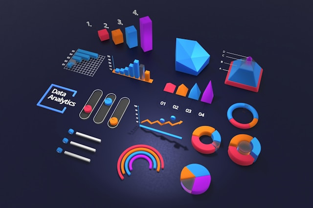

Food-Hub Order Analysis
In this project, I Utilized statistical analysis and visualization techniques to analyze data
and understand restaurant demand patterns, enabling strategic enhancements to business
operations and improving customer experience.


This project aims to predict which leads are most likely to convert into paying customers by
analyzing lead attributes and their interaction details, facilitating targeted strategies for
enhancing conversion rates.

In this project, I analyzed a mental health dataset using various technologies, including deep learning, classification methods, and TextBlob,
to perform sentiment analysis and gain insights into mental health states.

The objective was to identify which parameters significantly influence positive passenger
feedback. The data included travel and survey information from passengers, with both test and
train datasets collected simultaneously from the same population. Using a classification
algorithm, I achieved a precision of 0.9152 on the test data, indicating a high level of
accuracy in predicting positive feedback
Building a recommendation system to recommend the best Amazon products to users
This project involves recommending the best Amazon products available to users based on past
rating data using recommendation systems techniques.
Fantasy Sports Clustering Analysis
The aim of this project was to perform clustering analysis to identify players of different
potentials of each player based on previous season performance
Superkart Sales Prediction

SuperKart, an organization with a chain of supermarkets and food marts offering a wide range of
products, aims to predict future sales revenue for its various outlets. This prediction will
help them strategize sales operations across different tier cities and plan their inventory
accordingly. To achieve this, I used a regression algorithm.
Food Image Classification
The objective of this deep Learning algorithm project was to classify food image into three
categories.
The dataset folder contains different food images. The images are already split into Training
and Testing folders.
Each folder has four subfolders named `Bread`, `Soup`, and `Vegetables-Fruits`. These folders
have images of the respective classes.